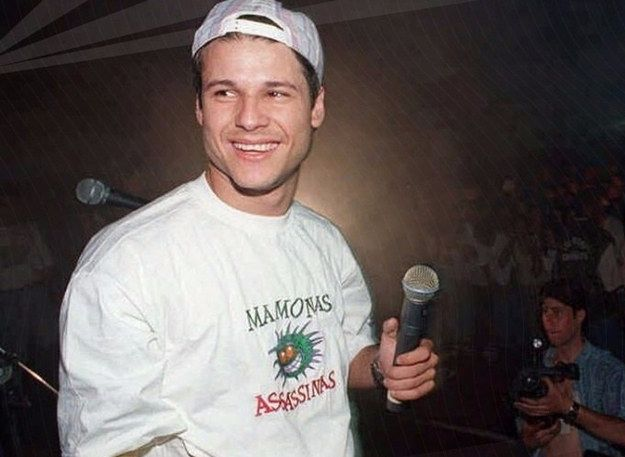
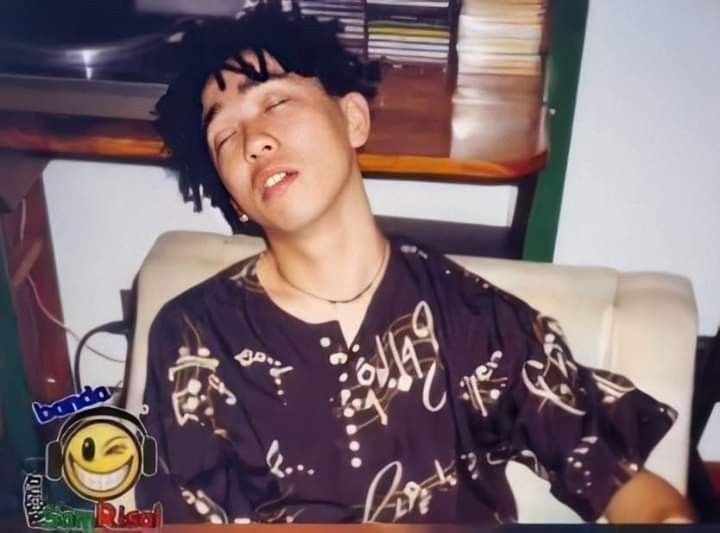
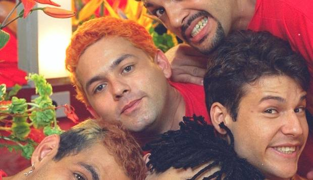
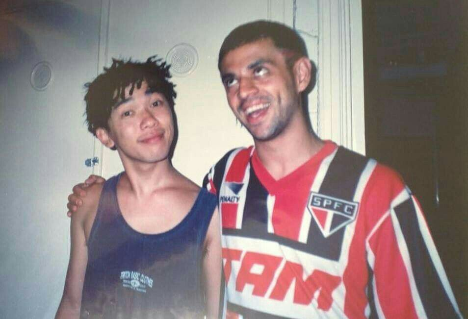

Dinho nasceu em Irecê, na Bahia, mas com apenas dois meses de vida migrou com os pais, Hildebrando Alves e Célia Ramos, para Guarulhos, em São Paulo, onde a família buscaria um futuro melhor. Seu apelido foi dado pela avó materna, Carmen Ramos, de origem espanhola, que não conseguia pronunciar Alecsander e por isso o apelidou de Dinho. Começou a cantar ainda na infância, e aos cinco anos de idade já era a grande atração do coral infantil da igreja que frequentava. Ainda durante a infância, teve suas primeiras aulas de canto na igreja Assembleia de Deus de Guarulhos em Vila Barros (Ministério de Madureira), dadas pelo professor Donizete Severo. Em 1993, o professor de canto morreu em um acidente na fábrica em que trabalhava e desde então Dinho nunca mais voltou à igreja. Desde a infância seu carisma era notável. Na escola, Dinho fazia sucesso com as meninas e era um verdadeiro terror para diretores e professores. Certa vez, em uma reunião de pais e mestres, uma professora desabafou para o pai de Dinho: "Botei o Dinho no fundo da sala, e ele não deixou ninguém do fundão estudar. Então o passei para o meio, e ele começou a incomodar os alunos da frente e os de trás. Então decidi colocá-lo na primeira fila, mas aí ele não me deixou dar aula. O que eu faço?". Aos dezessete anos, após ser eleito Garoto Verão de Guarulhos, vencer um concurso de dança no Programa Silvio Santos, do SBT, e se apresentar algumas vezes no Perdidos na Noite, da Rede Bandeirantes, Dinho completou o segundo ano do segundo grau e decidiu largar os estudos.
Alberto Hinoto, mais conhecido como Bento Hinoto (Itaquaquecetuba, 7 de agosto de 1970 — Serra da Cantareira, 2 de março de 1996), foi um músico brasileiro, notório por ter sido o guitarrista da banda Mamonas Assassinas. No filme Mamonas para sempre, o produtor da banda, Rick Bonadio, afirma que Bento era "o melhor músico do grupo e era o cara que dirigia, conduzia os arranjos". Além da música, algumas de suas características eram seu cabelo rastafári. Conheceu Sérgio Reoli, pelo seu irmão Maurício que descobriu que Sérgio era baterista e o apresentou para o irmão. Era torcedor do Palmeiras. Foi o único do grupo a ter frequentado a universidade: ele cursou alguns períodos do curso de física. Bento ganhou seu primeiro violão aos 14 anos. Dois anos depois, Toshiko Hinoto, sua mãe, lhe trouxe uma guitarra de presente do Japão e Maurício, seu irmão, ensinou-lhe algumas técnicas. Bento ficou obcecado, desenvolvendo habilidades técnicas das mais complicadas do mundo para compor solos tão bem elaborados e executados, como o da música "Débil Metal".
Júlio César Barbosa, mais conhecido como Júlio Rasec (Guarulhos, 4 de janeiro de 1968 — Serra da Cantareira, 2 de março de 1996), foi um músico brasileiro, tecladista da banda de Rock Mamonas Assassinas. O nome Rasec é a inversão de seu segundo nome César. Júlio era técnico de eletrônica, foi o último a entrar para banda por intermédio de Dinho que já era seu amigo. Começou como roadie da banda Utopia, onde mais tarde na mesma assumiu os teclados depois da saída do então tecladista do Utopia, Márcio Cardoso de Araújo. Junto com Dinho era o principal compositor dos Mamonas, além de tecladista, Júlio também fazia vocal em algumas músicas: Interpretava Maria na música Vira-Vira e nas apresentações ao vivo cantava as músicas Sábado de Sol e Sabão Crá Crá, além de imitar o cantor Belchior na música Uma Arlinda Mulher, dividindo o vocal com Dinho.
Sérgio Reis de Oliveira, mais conhecido como Sérgio Reoli (Guarulhos, 30 de setembro de 1969 — Serra da Cantareira, 2 de março de 1996), foi um músico brasileiro, baterista da banda Mamonas Assassinas. O mais velho dos descendentes do grupo sertanejo Irmãos Oliveira, Sérgio era um dos maiores piadistas do grupo. Ouvia Red Hot Chili Peppers, Rush, Barão Vermelho, Titãs e Paralamas do Sucesso. Era irmão de Samuel Reoli, o baixista da banda. Sérgio era apaixonado por bateria e mostrava toda sua energia nos palcos onde se apresentava. O nome Reoli vem das sílabas inicias de Reis Oliveira, sobrenome dos dois irmãos.
Samuel Reis de Oliveira, mais conhecido como Samuel Reoli (São Paulo, 11 de março de 1973 — Serra da Cantareira, 2 de março de 1996), foi um músico brasileiro. Era o baixista da banda Mamonas Assassinas e irmão de Sérgio Reoli, o baterista da mesma banda. O nome Reoli vem das sílabas iniciais de Reis e Oliveira, sobrenome dos dois irmãos. No final dos anos 80, junto ao seu irmão Sérgio Reoli e a Bento Hinoto formaram a banda Ponte Aérea, que mais tarde viria a se chamar Utopia e em seguida Mamonas Assassinas. Desde sua infância gostava de desenhar aviões.
